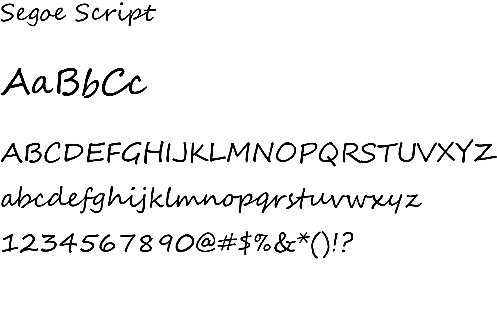

Michelle Stallone-Eggers
Overview
Responsive website design and development for Michelle Stallone-Eggers, a San Diego based meditating coach. Michelle wanted a simple but whimsical lotus logo with an infinity symbol that expresses balanced energy. The lotus logo is designed with Adobe Illustrator and the images from the website are polished and edited with Photoshop.
Role
Logo Design
Brand Identity
Web Development
Technology
Adobe Illustrator
Adobe Photoshop
Logo
Type
Display Type
Body Type

Palette
Testimonial
Working with Yvonne Tsu on a brand logo and design touches on my meditation website was a true collaboration and pleasure. Yvonne took examples of my design vision and put them into graphical illustration effortlessly and quickly. What struck me the most about working with Yvonne was her extreme patience and calm demeanor working through the iterative process, to deliver a product that exceeded requirements. I highly recommend Yvonne for her design, web services and leadership qualities. I enjoyed the journey and the outcome!